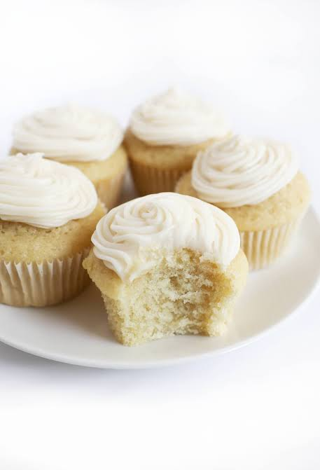

Cupcake
Back to Home

Delicious Cupcake Recipe
Description
Cupcakes are small, individual-sized cakes that are perfect for any occasion.
They are typically made with a light and fluffy batter, baked in a muffin tin, and topped with a variety of
frostings and decorations. Cupcakes are a fun and versatile treat that can be customized to suit any taste
or theme.
Ingredients
- 1 1/2 cups all-purpose flour
- 1 1/2 teaspoons baking powder
- 1/4 teaspoon salt
- 1/2 cup unsalted butter, softened
- 1 cup granulated sugar
- 2 large eggs
- 2 teaspoons vanilla extract
- 1/2 cup whole milk
Instructions or Steps
- Step 1: Preheat your oven to 350°F (175°C) and line a muffin tin with cupcake liners.
- Step 2: In a medium bowl, whisk together the flour, baking powder, and salt. Set aside.
- Step 3: In a large bowl, cream together the butter and sugar until light and fluffy.
Add the eggs one at a time, beating well after each addition. Stir in the vanilla extract.
- Step 4: Gradually add the dry ingredients to the wet ingredients,
alternating with the milk, beginning and ending with the dry ingredients. Mix until just combined.
- Step 5: Divide the batter evenly among the cupcake liners, filling each about 2/3 full.
Bake for 18-20 minutes, or until a toothpick inserted into the center comes out clean.
Allow the cupcakes to cool in the tin for 5 minutes,
then transfer to a wire rack to cool completely before frosting.